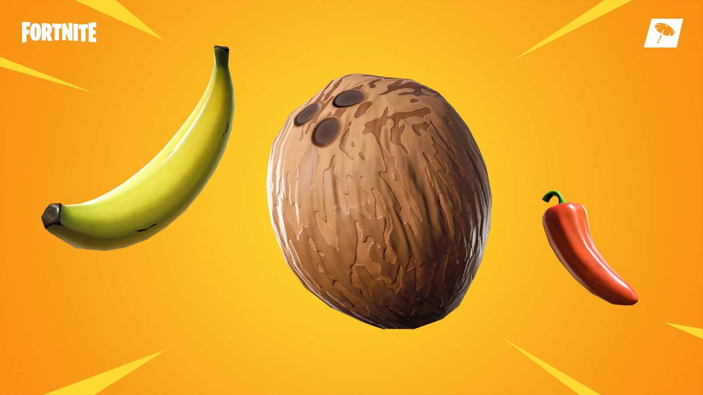

When you start the game you wanna look for chest which will give you loot and guns to deafeat other players The heals that are good for the game are minis and big pots. First drink two minis to get 50HP and then drink a big pot for another 50HP. Then you will be at 100 and 100 but many times when you get shot at you will lose some shield to and sometimes you will also lose your HP.
The coconut and the banana give you health, the pepper will only make you run fast and will heal you a little bit. I would use the pepper one time and not keep them. Sometimes if you need to keep them, then you can keep them. But always keep minis in your invintory maybe when you have nothing and you land at a spot with food you might want to consume some coconuts or mushrooms for shield.
click here for more information